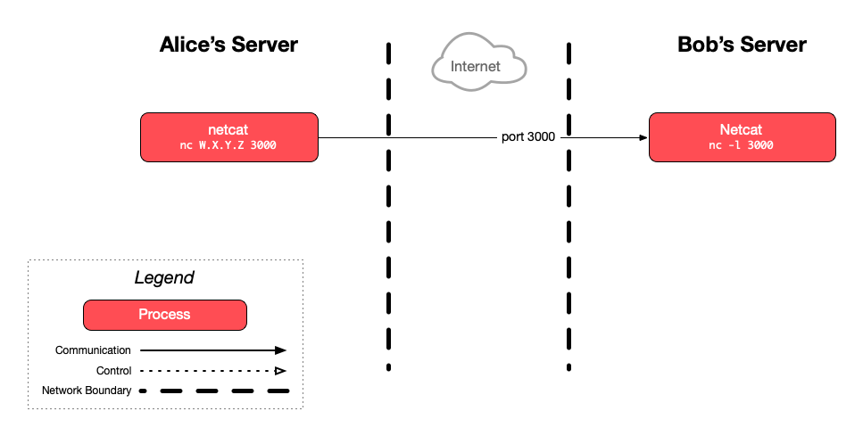

Make TCP connections
This exercise guides you through establishing a raw TCP connection between two
servers and manually sending an HTTP request to a web server, illustrating how
network protocols work in practice.
 Legend
Legend
Parts of this exercise are annotated with the following icons:
-
 A task you MUST perform to complete the exercise
A task you MUST perform to complete the exercise
-
 Optional step that you may perform to make sure that
everything is working correctly, or to set up additional tools that are not required but can
help you
Optional step that you may perform to make sure that
everything is working correctly, or to set up additional tools that are not required but can
help you
-
 Advanced tips on how to go further (or
challenges!)
Advanced tips on how to go further (or
challenges!)
 The end of the exercise
The end of the exercise-
 The architecture of the software you ran or
deployed during this exercise
The architecture of the software you ran or
deployed during this exercise
-
 Troubleshooting tips: how to fix common problems you might
encounter
Troubleshooting tips: how to fix common problems you might
encounter
Establish a bi-directional TCP connection
You need to find a partner for this part of the exercise, since the goal is to
establish a TCP connection between two of the servers you have set up for the
course.
Let’s call you and your partner Bob and Alice.
Alice will need to know the public IP address of Bob’s server. We will refer to
it as W.X.Y.Z.
Bob: listen for TCP clients
Bob should run the nc command on his server to listen for TCP connections on
port 3000:
$> nc -l 3000
 More information
More informationAt this point, nc will start listening on port 3000 and take over the
console, waiting for a TCP client to connect.
Alice: connect to Bob’s server
Alice should run the nc command on her server to connect to TCP port 3000 on
Bob’s server:
$> nc W.X.Y.Z 3000
More information Here, nc is acting as a client, connecting to the listening nc process on
Bob’s server.
Bob and Alice: communicate!
Bob should type “Hello” and press Enter to send this text:
$> nc -l 3000
Hello
It should be immediately displayed in Alice’s terminal:
$> nc W.X.Y.Z 3000
Hello
Similarly, if Alice types “World” after that and presses Enter, it should
immediately appear in Bob’s terminal:
$> nc W.X.Y.Z 3000
Hello
World
$> nc -l 3000
Hello
World
You have a two-way raw TCP connection running.
Once you’re done, you can close the connection with Ctrl-C.
Talk dirty HTTP to Google
You can do the rest of this exercise individually.
Let’s do something that your browser does every day: an HTTP request.
Find out Google’s IP address (O.P.Q.R in this example) using the ping
command:
$> ping -c 1 google.com
PING google.com (`O.P.Q.R`) 56(84) bytes of data.
64 bytes from google.com (O.P.Q.R): icmp_seq=1 ttl=53 time=0.890 ms
...
Open a TCP connection to the Google IP address you found:
$> nc O.P.Q.R 80
Now, talk to this Google server, but not in English or French, in the HTTP protocol:
GET / HTTP/1.1
Host: www.google.com
 Tip
TipBe sure to type exactly the text above. Your request must be a valid HTTP
request or Google’s server will not be able to interpret it correctly. If you
have made a mistake, exit with Ctrl-C and start over.
More information By sending this text over the TCP connection, you are communicating in the HTTP
protocol, a text protocol: you are sending an HTTP request to retrieve (GET)
the resource at path / of host www.google.com (the landing page of the
Google website), using version 1.1 of the HTTP protocol.
Press Enter twice and you should receive the HTML for Google’s home page.
Once you’re done, you can close the connection with Ctrl-C.
If you open your browser, visit http://www.google.com and display the source
code of the page, you should see the same result.
Troubleshooting
- If you get a
400 Bad Request response, it means that your HTTP request is
invalid. You probably did not type exactly the text above.
- If you don’t get a response, it may be because you took too long to type the
text, and the request has timed out. Try again a little faster.
What have I done?
Contratulations!
Like the pioneers of the 1970s who developed the TCP/IP suite, you have
established a TCP connection between two machines and exchanged some (hopefully
nice) words with your classmate.
You have also spoken HTTP directly to Google’s web server on a TCP connection,
demonstrating the layering of the OSI model:
- You have hand-written an HTTP request, a level 7 application protocol. As
you’ve seen, this is simply text written in the correct format.
- You have sent this request through a TCP connection, a level 4 transport
protocol.
- To reach the correct host, you have used an address of the Internet
Protocol (IP), a level-3 network protocol.
More information There are other protocols in other layers at work, but these are the ones that
interest us in the context of this course.
You can also now fully appreciate what your browser does for you every day.
Architecture
This is a simplified architecture of the main running processes and
communication flow during this exercise:
